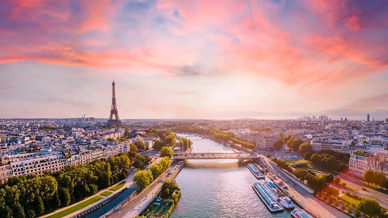
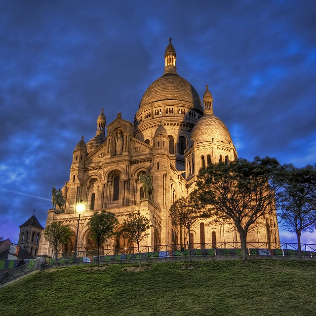

Welcome to the city of love
Most Famous Places To Visit In Paris

The Eiffel Tower is one of the most famous landmarks in the world. Located in Paris France it attracts millions of visitors each year.
The tower was completed in 1889 for the World's Fair celebrating the 100th anniversary of the French Revolution. It stands about 1 083
feet tall and was the tallest man-made structure until 1930- The Eiffel Tower is not only an architectural
marvel but also a symbol of French culture and innovation.
The tower was completed in 1889 for the World's Fair celebrating the 100th anniversary of the French Revolution. It stands about 1 083
feet tall and was the tallest man-made structure until 1930- The Eiffel Tower is not only an architectural
marvel but also a symbol of French culture and innovation.

The Arc de Triomphe is a famous monument located in Paris France. It honors those who fought and died for France
during various wars especially in the Napoleonic Wars. This grand structure stands at the top of the Champs-Élysées where
many people come to admire its beauty. Visitors can climb to the top for a stunning view of the city. The Arc de Triomphe
is not just a symbol of victory but also a reminder of the sacrifices made for the country.
during various wars especially in the Napoleonic Wars. This grand structure stands at the top of the Champs-Élysées where
many people come to admire its beauty. Visitors can climb to the top for a stunning view of the city. The Arc de Triomphe
is not just a symbol of victory but also a reminder of the sacrifices made for the country.

The Louvre is one of the most famous art museums in the world located in Paris France. It holds a vast collection
of art including paintings sculptures and historical artifacts. Many visitors come to see the Mona Lisa
a famous painting by Leonardo da Vinci. The museum itself is a beautiful building originally built as a royal
palace. Each year millions of people visit the Louvre to admire its art and learn about history.
of art including paintings sculptures and historical artifacts. Many visitors come to see the Mona Lisa
a famous painting by Leonardo da Vinci. The museum itself is a beautiful building originally built as a royal
palace. Each year millions of people visit the Louvre to admire its art and learn about history.

Notre Dame is a famous cathedral located in Paris France. Known for its stunning Gothic architecture it features beautiful stained glass windows
and intricate sculptures. The cathedral has a rich history dating back to the 12th century and has witnessed many important events including
royal ceremonies and national celebrations. In 2019 a major fire caused significant damage to Notre Dame but restoration efforts are underway to
restore its former glory. This iconic landmark continues to attract millions of visitors each year symbolizing the beauty and resilience of French culture.
and intricate sculptures. The cathedral has a rich history dating back to the 12th century and has witnessed many important events including
royal ceremonies and national celebrations. In 2019 a major fire caused significant damage to Notre Dame but restoration efforts are underway to
restore its former glory. This iconic landmark continues to attract millions of visitors each year symbolizing the beauty and resilience of French culture.

The Basilique du Sacré-Cœur commonly known as the Sacré-Cœur Basilica is a famous church located in Paris France.
It sits atop the highest point in the city Montmartre offering beautiful views of Paris. The basilica was built in the late 19th
century and features a stunning white dome made of limestone. Many visitors come to admire its impressive architecture and the peaceful atmosphere inside.
The basilica is not only a place of worship but also a popular tourist destination attracting millions of people each year.
It sits atop the highest point in the city Montmartre offering beautiful views of Paris. The basilica was built in the late 19th
century and features a stunning white dome made of limestone. Many visitors come to admire its impressive architecture and the peaceful atmosphere inside.
The basilica is not only a place of worship but also a popular tourist destination attracting millions of people each year.